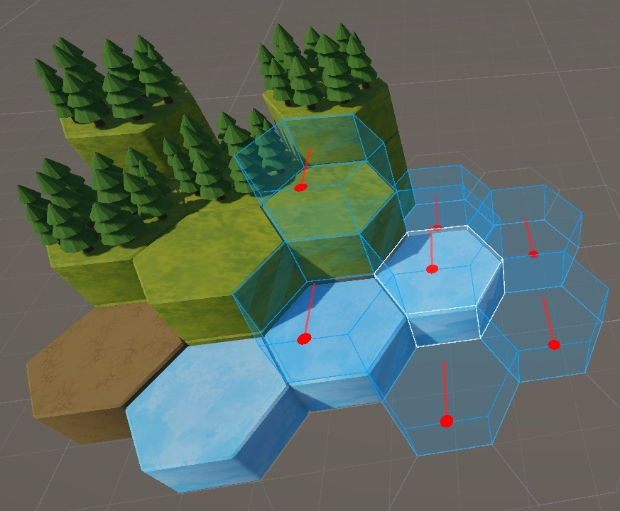
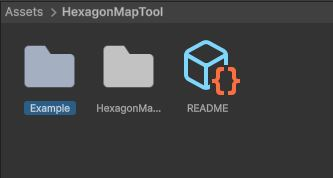
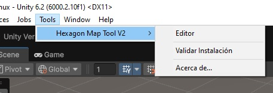
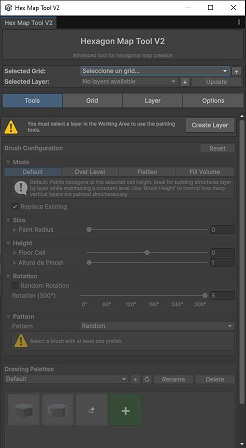
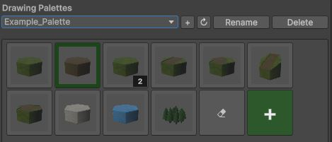
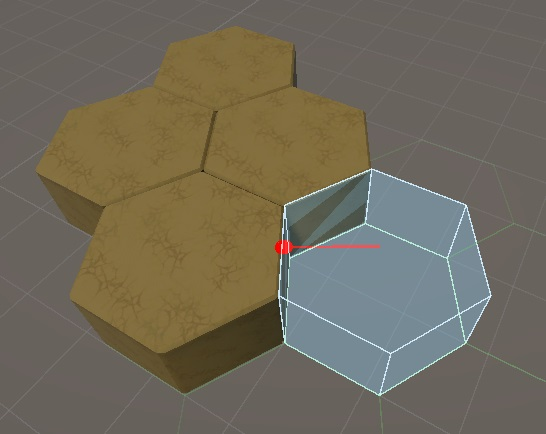

1. Introducción
Hexagon Map Tool V2 es una herramienta avanzada para Unity diseñada para facilitar la creación, edición y gestión de mapas hexagonales en 3D. Su propósito es agilizar el proceso de diseño de niveles, permitiendo a los desarrolladores construir mapas complejos de manera intuitiva y eficiente, gracias a un sistema de grillas flexible, pinceles personalizables y múltiples opciones de organización y visualización.
2. Explorando los recursos de ejemplo
- Añade el paquete Hexagon Map Tools V2 desde el "Package Manager" de Unity.
- Abre la carpeta Example incluida en el proyecto y carga la escena de
ejemplo.


- Abre la herramienta desde la barra de herramientas de Unity: Tools > Hexagon Map Tool
V2 > Editor.
  - Selecciona un grid disponible para habilitar el uso de la herramienta. Luego, selecciona la
paleta “Example Palette” en el menú desplegable de paletas.

- Elige un pincel de la paleta.
 - Haz clic en el grid de la escena para empezar a dibujar con el pincel seleccionado.

¡Listo! Ya puedes comenzar a crear y editar mapas hexagonales en tu proyecto.
3. Configuración de escena
- Abre la escena de Unity donde deseas trabajar.
- Desde la herramienta Hexagon Map Tool V2, haz clic en el botón "+" para añadir una nueva
capa.

- Ingresa el nombre de la nueva capa.

- Se creará automáticamente una capa y un grid hexagonal.

- Puedes personalizar la geometría del grid, la separación entre celdas, la rotación y otros
parámetros desde su componente.

4. Integración de modelos 3D
- Importa tus modelos 3D a Unity. Asegúrate de que tus modelos se vean bien en la rotación en (0,
0, 0), ya que esta orientación se usará como base.

-
Añade el componente Hexagon Object a tu modelo. El offset del pivote se
ajustará automáticamente, pero puedes modificarlo si lo necesitas. Si no existe un grid, se
creará uno nuevo usando las dimensiones del objeto como referencia. Si ya hay un grid, la
herramienta ajustará automáticamente la altura ocupada por el objeto.

- Configura las propiedades del objeto, como la cantidad de celdas que ocupa, si otros objetos
pueden ocupar el mismo espacio, si se comporta como prop o requiere de un suelo para acomodarse.
Si este objeto es una instancia de un prefab, estos cambios afectarán a todas las
instancias.

- Convierte el objeto en un prefab.

- Crea una nueva paleta con el botón "+" y dale un nombre.


- Arrastra el prefab al botón "+" de color verde en la herramienta, o haz clic en ese botón para
crear un nuevo pincel. Tu pincel puede contener varios prefabs para crear patrones específicos o
aleatorios.


- ¡Ya puedes hacer uso de tus propios pinceles!

5. Referencia de componentes
HEXAGON OBJECT

- Parent Layer Reference (Capa de tiles donde se registra este objeto)
Referencia a la capa (HexagonTileLayer) en la que este objeto está registrado dentro del grid hexagonal. Determina a qué conjunto de celdas pertenece el objeto y permite organizar diferentes tipos de elementos en capas separadas (por ejemplo, terreno, decoraciones, obstáculos). - Cell Coordinate (Coordenada de celda que ocupa este objeto)
Indica la posición exacta de la celda hexagonal que ocupa el objeto dentro de la capa asignada. Esta coordenada se utiliza para ubicar y alinear el objeto correctamente en el grid, y es fundamental para las operaciones de pintado, borrado y validación.
- Pivot Offset (Offset del pivote del objeto)
Permite ajustar manualmente el punto de apoyo (pivot) del objeto respecto a la celda. Es útil cuando el modelo 3D tiene el pivote en una posición diferente al centro o la base, asegurando que el objeto se alinee correctamente con el grid y otras celdas. - Height Cells (Altura que ocupa este objeto en celdas hexagonales)
Define cuántas celdas de altura ocupa el objeto en el grid. Es especialmente útil para objetos altos, como edificios o columnas, que deben ocupar más de una celda verticalmente. El valor mínimo es 1. - Is Stackable (¿Permite que otros objetos se apilen encima?)
Indica si este objeto puede servir de base para que otros objetos se coloquen encima de él. Actívalo para permitir la construcción de estructuras apiladas o multicapas. - Is Hexagon Prop (¿Es un prop decorativo?)
Marca el objeto como un elemento decorativo (prop), como árboles, rocas o detalles visuales. Los props suelen ser ignorados por las herramientas de pintado masivo, excepto cuando se utiliza el borrador, facilitando la gestión de decoraciones sin afectar la jugabilidad. - Requires Floor (¿Requiere un objeto sólido debajo para ser colocado?)
Determina si el objeto necesita estar apoyado sobre una celda sólida (por ejemplo, terreno) para poder colocarse, excepto cuando está a nivel del suelo. Si está desactivado, el objeto puede colocarse en el aire.
HEXAGON GRID

- Grid Geometry (Geometría de la celda hexagonal)
Define la forma y dimensiones básicas de cada celda hexagonal. Incluye el radio (distancia del centro a un vértice), el apotema (distancia del centro al centro de un lado), la altura del prisma y la longitud de los lados. Modificar estos valores cambia el tamaño y proporción de todas las celdas del grid. - Cell Swizzle (Configuración de ejes para transformaciones espaciales)
Determina cómo se asignan los ejes X, Y y Z del grid en el espacio 3D. Cambiar el swizzle puede ser útil para adaptar el grid a diferentes orientaciones de cámara o estilos de juego. - Cell Gap (Espacio entre celdas)
Permite añadir un espacio adicional entre las celdas hexagonales en los ejes X, Y y Z. Es útil para crear grids menos compactos o para separar visualmente los hexágonos.
- Enable Debug (Activar todas las herramientas de debug visual)
Habilita herramientas visuales adicionales para depuración, como la visualización de vecinos, rangos y otras ayudas gráficas útiles durante el desarrollo y testeo. - Neighbor Radius (Alcance de vecinos hexagonales a mostrar desde el centro)
Define cuántos anillos de celdas vecinas se muestran alrededor de la celda central cuando el debug está activado. Es útil para visualizar áreas de influencia, rangos de movimiento o selección. - Height Range (Rango de altura (Y) a mostrar arriba y abajo del centro)
Permite visualizar celdas en diferentes niveles verticales (Y) respecto a la celda central, facilitando la edición y depuración de mapas en 3D con varias alturas. - Show Grid (Mostrar el grid en la Scene View)
Activa o desactiva la visualización del grid hexagonal en la ventana de escena de Unity. - Grid Color (Color del grid en la Scene View)
Permite elegir el color con el que se dibuja el grid en la escena, facilitando la visualización según el fondo o el tipo de mapa. - Show Coordinates (Mostrar coordenadas de los hexágonos como texto en Scene View)
Muestra las coordenadas de cada celda hexagonal directamente en la escena, lo que facilita la identificación y depuración de posiciones específicas. - Coordinates Color (Color del texto de coordenadas)
Permite personalizar el color del texto de las coordenadas para mejorar la visibilidad sobre diferentes fondos. - Coordinates Size (Tamaño del texto de coordenadas)
Ajusta el tamaño del texto que muestra las coordenadas en la escena, útil para adaptarse a diferentes escalas de grid o distancias de cámara.
HEXAGON TILE LAYER

- Hexagon Grid Reference (Referencia al grid hexagonal padre)
Vincula esta capa a un componente HexagonGrid3D. Es fundamental para que la capa herede la geometría, orientación y configuración del grid principal. Si no está asignado, la capa no podrá calcular posiciones ni alinear objetos correctamente. - Floor Cell (Celda de piso donde se colocan los objetos por defecto)
Define el nivel base (en unidades del grid) donde se colocan los objetos por defecto en esta capa. Puede ser negativo para crear capas subterráneas o positivo para niveles elevados. Es útil para organizar mapas en diferentes alturas o pisos. - Base Gizmo Color (Color del plano base hexagonal en los gizmos)
Permite personalizar el color con el que se dibuja la capa en la Scene View. Esto facilita distinguir visualmente entre diferentes capas o resaltar la capa activa durante la edición.
- Layer Statistics (Estadísticas de la capa)
Muestra información útil sobre la capa, como la cantidad de celdas ocupadas y el número total de objetos registrados. Ayuda a monitorear el uso y la densidad de la capa durante el desarrollo. - Cleanup Null References (Limpiar referencias nulas)
Botón que elimina referencias a objetos que ya no existen o han sido eliminados, manteniendo el registro de ocupación limpio y evitando errores. - Rebuild from Hierarchy (Reconstruir desde jerarquía)
Reconstruye el registro de ocupación de celdas analizando todos los HexagonObject hijos en la jerarquía. Útil si se han hecho cambios manuales en la escena o se han movido objetos entre capas.
2. Interfaz de la herramienta
La ventana principal de la Hexagon Map Tool V2 es el centro de control para la creación, edición y gestión de mapas hexagonales en Unity. Su diseño modular y su interfaz intuitiva permiten a usuarios de todos los niveles trabajar de manera eficiente con grids, capas y objetos hexagonales.
- Título y Encabezado
El encabezado muestra el nombre de la herramienta y un subtítulo descriptivo. Esto ayuda a identificar rápidamente la ventana y su propósito dentro del editor de Unity.
(Se puede ocultar el título desde el menú de opciones) - Selección de Grid (“Grid seleccionado”)
- Dropdown de grids: Permite seleccionar el grid hexagonal activo en la escena. Solo los grids presentes en la escena actual aparecen en la lista. Si no hay grids disponibles, el dropdown lo indica y deshabilita las opciones relacionadas.
- Botón “+” (Crear nuevo grid): Crea un nuevo grid hexagonal en la escena y lo selecciona automáticamente. Útil para iniciar rápidamente un nuevo mapa o área de trabajo.
- Selección de Layer (“Layer seleccionado”)
- Dropdown de layers: Muestra todas las capas (layers) asociadas al grid seleccionado. Permite elegir la capa activa para edición. Las capas deshabilitadas se indican visualmente. Incluye la opción “[+] Nuevo layer” para crear una nueva capa directamente desde el menú.
- Botón “+” (Crear nuevo layer): Crea una nueva capa hexagonal en el grid seleccionado. Se recomienda nombrar y configurar la capa tras su creación.
- Botón “Actualizar”: Reconstruye y sincroniza la información de la capa seleccionada con la jerarquía de la escena. Útil si se han realizado cambios manuales en la estructura de objetos o si se detectan inconsistencias.
Pestaña: Herramientas (Tools)
Pestaña: Grid
Configuración avanzada del grid seleccionado, incluyendo geometría, tamaño, orientación y opciones de visualización.
Pestaña: Capa (Layer)
Gestión y edición de las capas hexagonales, con herramientas para manipular objetos, estadísticas y utilidades de limpieza.
Pestaña: Opciones (Options)
Preferencias generales de la herramienta, ajustes de visualización, idioma y otras configuraciones globales.
6. Opciones avanzadas
Explora configuraciones y herramientas adicionales para usuarios avanzados, como automatización, integración con otros sistemas o scripts personalizados.
7. Personalización de entorno
Aprende a adaptar la herramienta a tus preferencias, modificar atajos, temas visuales y ajustar el entorno de trabajo para una experiencia óptima.